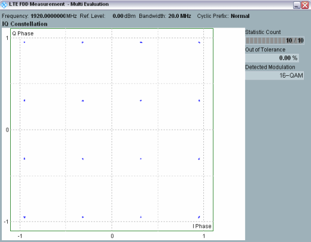

The constellation diagram shows the modulation symbols as points in the I/Q plane.

The constellation diagrams depend on the modulation type; for details refer to the description of the individual firmware applications. The diagrams are normalized such that the average distance of all points from the origin is 1.
Constellation diagrams give a graphical representation of the signal quality and can help to reveal typical modulation errors causing signal distortions, as shown in the table below. In practice, the received signal shows a combination of the modulation errors listed.
Modulation error | Description / cause | Effect in the constellation diagram |
|---|---|---|
I/Q imbalance | Caused by different gains of the I and Q components | One of the components is expanded, the other compressed |
I/Q origin offset | Caused by an interfering signal at the RF carrier frequency | All constellation points are shifted by the same vector |
Interferer | Non-coherent single-frequency spurious signal in the frequency band, superimposed on the modulated signal | Rotating pointer superimposed on each constellation point, causes circular constellation points |
Gaussian noise | Uncorrelated interfering signals | Fuzzy constellation points |
Phase error | Phase shift between I and Q components different from 90 deg | Non-orthogonal I and Q components |
Phase noise | Uncorrelated phase error | Rotationally spreading constellation points |
Amplitude compression | Large amplitudes below the nominal value, caused by non-linear components in the transmission path | Corner points move towards the center |
Unused detected subcarriers (in OFDMA systems) | An unused/inactive subcarrier is measured, most likely due to a mismatch between the TX measurement settings and the measured signal | Unexpected constellation close to the origin (zero signal power) |